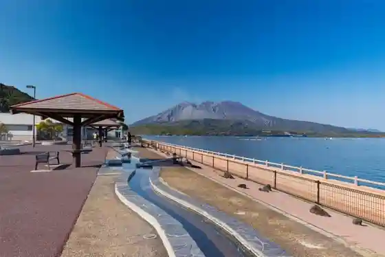
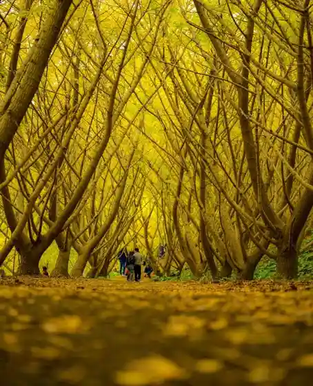
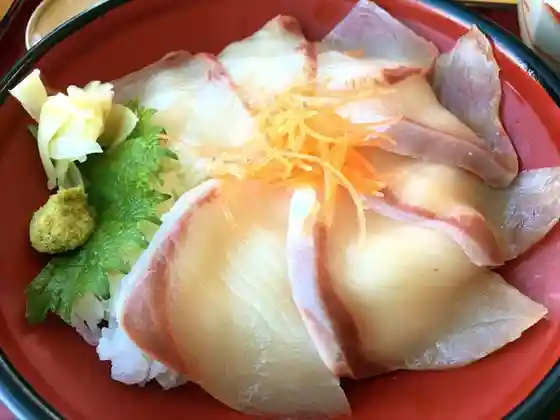
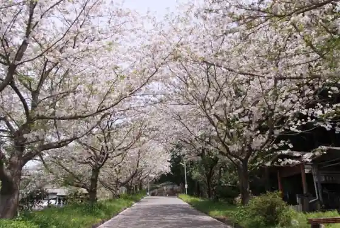

Taka Toge Tsutsujiga Oka Park
Tarumizu, Kagoshima · 0994-32-1111 · Official / source link
Roadside Station Tarumizu Yu Tsu Tari Kan
Tarumizu, Kagoshima · 0994-34-2237 · Official / source link

Tarumizu Sembon Icho
Tarumizu, Kagoshima · 0994-32-1111 · Official / source link

Roadside Station Tarumizu Yu Tsu Tari Kan Resutoran Fumoto
Tarumizu, Kagoshima · 0994-34-2237 · Official / source link

Ushinesakai Tetsudo Memorial Park
Tarumizu, Kagoshima · 0994-32-1111 · Official / source link

Te Kan Shrine (Ue Yuki Miya Shrine)
Tarumizu, Kagoshima · 0994-32-1486 · Official / source link
Ko Yuki Shima Onsen
Tarumizu, Kagoshima · 0994-32-0765 · Official / source link
Sarugashiro Gorge Mori no Eki Tarumizu
Tarumizu, Kagoshima · 0994-32-9601 · Official / source link
Sarugashiro Radon Onsen
Tarumizu, Kagoshima · 0994-38-6117 · Official / source link
Kaigata Fishing Port Sakura Kan Shokudo
Tarumizu, Kagoshima · 0994-32-1165 · Official / source link
Tarumizu Kaigata Onsen Koyo Kan
Tarumizu, Kagoshima · 0994-32-0505 · Official / source link
Kindai Zosen Hassho no Chi
Tarumizu, Kagoshima · Official / source link
O Nagaya Ato (Hayashi Yuki Castle Ruins)
Tarumizu, Kagoshima · Official / source link
Kaigata Sakura Park Hotaru Park
Tarumizu, Kagoshima · 0994-32-1111 · Official / source link
Tasaki Kannon
Tarumizu, Kagoshima · Official / source link
Ushinefumoto Maibotsu Torii (Inari Daimyojin)
Tarumizu, Kagoshima · 0994-32-1111 · Official / source link
Arasaki Parking Area
Tarumizu, Kagoshima · 0994-32-8839 · Official / source link
Roadside Station Tarumizuhamabira
Tarumizu, Kagoshima · 0994-45-5727 · Official / source link
Teiemu Bokujo Onsen (Masakari Onsen)
Tarumizu, Kagoshima · 0994-35-3520 · Official / source link
Mamiizukafe
Tarumizu, Kagoshima · 090-5746-2474 · Official / source link
Kyanioningu Shawakuraimingu Experience
Tarumizu, Kagoshima · 0994-32-9601 · Official / source link
Tarumizu Gyogyo Experience
Tarumizu, Kagoshima · 0994-32-1165 · Official / source link
Tarumizu Shimazu Ie Hakasho
Tarumizu, Kagoshima · 0994-32-0224 · Official / source link
Tarumizu Fumoto
Tarumizu, Kagoshima · 0994-32-7551 · Official / source link
Ribumakkusu Resort Sakura Shima Shiifuronto
Tarumizu, Kagoshima · 0994-32-9195 · Official / source link